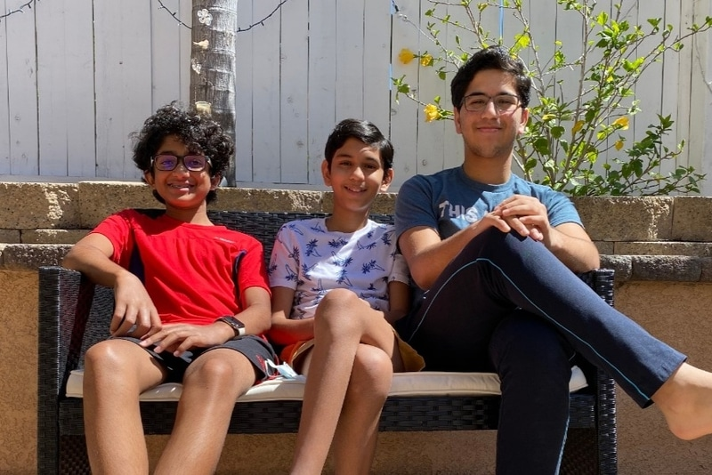

Our Members are Parth Saxena, Sarosh Thalappil, Pratham Saxena. Sarosh is one of the developers of the TutorPal platform. Sarosh is currently a 9th grader attending Scripps Ranch High School and has programming knowledge in Python. Accompanying Sarosh in the development of the tutorPal platform is Parth, a 7th grader at Thurgood Marshall Middle School. Parth has worked in Python, JavaScript, CSS, and HTML. Pratham is the website content manager and designer for the TutorPal platform. He is currently in 11th grade and has a background in Java, C, and Python. TutorPal’s main purpose is to link students and tutors from any area to receive assistance. To prevent struggle in the search for tutors, tutorPal instantly provides the best tutors.